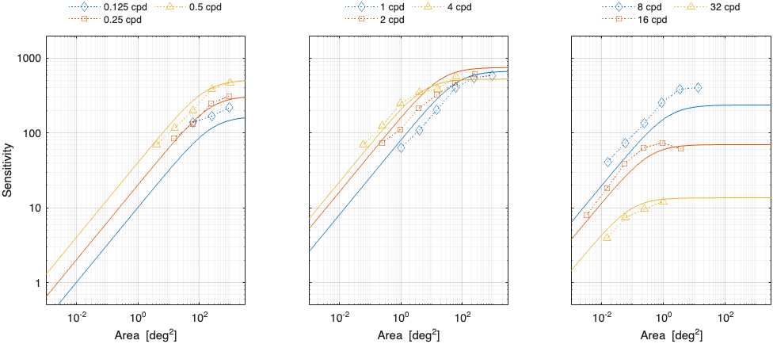
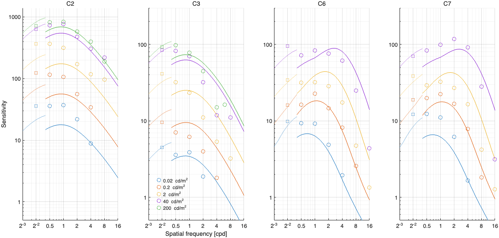
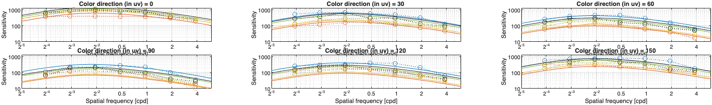
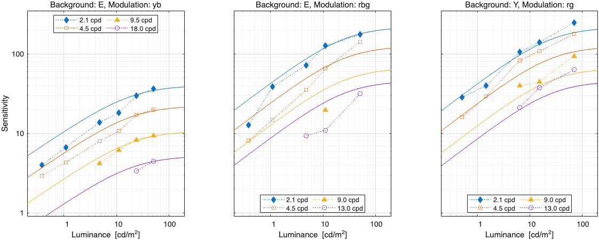
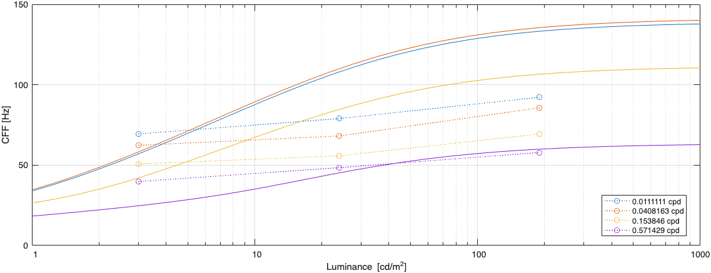

castleCSF refitting with transient channel limited
Fitting error
Model parameters
castleCSF temporal limited
M_lms2acc =
1.0000 1.0000 0
1.0000 -2.3112 0
-1.0000 -1.0000 50.9875
p.disc_area = 0.853219;
p.disc_beta = 2.76064;
p.rg.sigma_sust = 28.0127;
p.rg.beta_sust = 1.33869;
p.rg.ch_sust.S_max = [ 605.248 34.764 0.501281 ];
p.rg.ch_sust.f_max = 0.0342253;
p.rg.ch_sust.bw = 2.2956;
p.rg.A_0 = 3570.21;
p.rg.f_0 = 0.0457635;
p.rg.ecc_drop = 2.29774e-08;
p.rg.ecc_drop_nasal = 13063.1;
p.rg.ecc_drop_f = 9.40748e-13;
p.rg.ecc_drop_f_nasal = 0.718231;
p.yv.sigma_sust = 1.96014;
p.yv.beta_sust = 0.381203;
p.yv.ch_sust.S_max = [ 72.2762 24.1768 0.439391 ];
p.yv.ch_sust.f_max = 0.0233062;
p.yv.ch_sust.bw = 2.27911;
p.yv.A_0 = 1.0848e+08;
p.yv.f_0 = 0.00027766;
p.yv.ecc_drop = 7.65737;
p.yv.ecc_drop_nasal = 9.6761e-08;
p.yv.ecc_drop_f = 4435.93;
p.yv.ecc_drop_f_nasal = 5.74003e-16;
p.ach.ach_sust.bw = 2.31772e-14;
p.ach.ach_sust.a = 0.0470342;
p.ach.ach_sust.A_0 = 281.567;
p.ach.ach_sust.f_0 = 0.566254;
p.ach.ach_trans.S_max = [ 302858 1.30882e+11 0.278488 ];
p.ach.ach_trans.f_max = 0.00960901;
p.ach.ach_trans.bw = 1.55508;
p.ach.ach_trans.a = 1.11309;
p.ach.ach_trans.A_0 = 5.0307e+12;
p.ach.ach_trans.f_0 = 28.2074;
p.ach.sigma_trans = [ 2.34152e-12 1.83032e-07 ];
p.ach.sigma_sust = 3.22395;
p.ach.beta_trans = 0.000441189;
p.ach.beta_sust = 0.709738;
p.ach.omega_trans = [ 3.01147 1.53198 6.55791 2.81476 ];
p.ach.ecc_drop = 0.0102499;
p.ach.ecc_drop_nasal = 0.0130768;
p.ach.ecc_drop_f = 0.0190786;
p.ach.ecc_drop_f_nasal = 0.0158771;
↸CSF model: castleCSF temporal limited
Sustained and transient response
Legend
To keep the plots legible, only up to 3 models are plotted.
↸Dataset: [modelfest] ModelFest
Achromatic CSF as a function of frequency

↸Dataset: [hdrvdp_csf] HDR-VDP CSF
Achromatic CSF as a function of frequency
Achromatic CSF as a function of size
↸Dataset: [rovamo1993] Rovamo et al. 1993
CSF as the funcation of stimulus area

CSF as the function of spatial frequency
↸Dataset: [laird2006] Laird et al. 2006
Achromatic CSF as a function of temporal frequency for different spatial frequencies
↸Dataset: [snowden1995] Snowden et al. 1995
Temporal contrast sensitivity at different spatial frequencies and luminance levels
↸Dataset: [robson1966] Robson 1966
Spatial CSF for different temporal frequencies
Temporal CSF for different spatial frequencies
↸Dataset: [virsu1979] Virsu & Rovamo 1979
Contrast sensitivity of central and peripheral vision as a function of spatial frequency and eccentricity
↸Dataset: [virsu1982] Virsu et al. 1982
Contrast sensitivity as the function of frequency
↸Dataset: [wright1983] Wright and Johnson 1983
CSF as function of eccentricity
↸Dataset: [anderson1991] Anderson et al. 1991
Contrast sensitivity as the function of retinal visual field (at 8 Hz)
↸Dataset: [colorfest] ColorFest
Chromatic CSF as a function of frequency
↸Dataset: [hdr_csf] High Dynamic Range CSF
CSF as the function of frequency at different luminance levels (fixed number of cycles)
CSF for different number of cycles
↸Dataset: [kim2013] Chromatic CSF [Kim et al. 2013]
Chromatic CSF as a function of frequency

↸Dataset: [five_centres] Five centres [Xu et al. 2020]
Chromatic CSF as ellipses
Chromatic CSF as a function of frequency

↸Dataset: [lucassen2018] Lucassen et al. 2018
Lucassen2018 CSF sensitivity vs spatial frequency
↸Dataset: [hdr_csf_disc] High Dynamic Range Disc CSF
CSF as the function of size at different luminance levels
↸Dataset: [kong2018] Kong et al. 2018
Chromatic CSF as a function of temporal frequency (9 background colors and 4 color directions in uv space
↸Dataset: [vanderHorst1969_b] Van der Horst & Bouman 1969
Static chromatic contrast thresholds as a function of spatial frequency
Static chromatic contrast thresholds as function of luminance

Chromatic contrast thresholds for travelling sine waves as function of spatial frequency
Chromatic contrast thresholds for travelling sine waves as function of temporal frequency
↸Dataset: [hansen2009] Hansen et al. 2009
CSF as the function of eccentricity
↸Dataset: [krajancich2021] Krajancich et al. 2021
Critical fusion frequency at eccentricities

CFF at luminance levels for 0.57 cpd
CFF at luminance levels, foveal vision (ecc=0)

↸Dataset: [hecht1933] Hecht 1933
CFF for white light as a function of luminance and eccentricity
↸Dataset: [hvei_cff2022] HVEI CFF 2022
CFF for white light as a function of luminance and eccentricity
↸Dataset: [deLange1958b] De Lange 1958
CFF for white light as a function of luminance
↸Dataset: [hartmann1979] Hartmann et al. 1979
CFF as a function of eccentricity at different luminance levels
CFF as a function of stimulus diameter